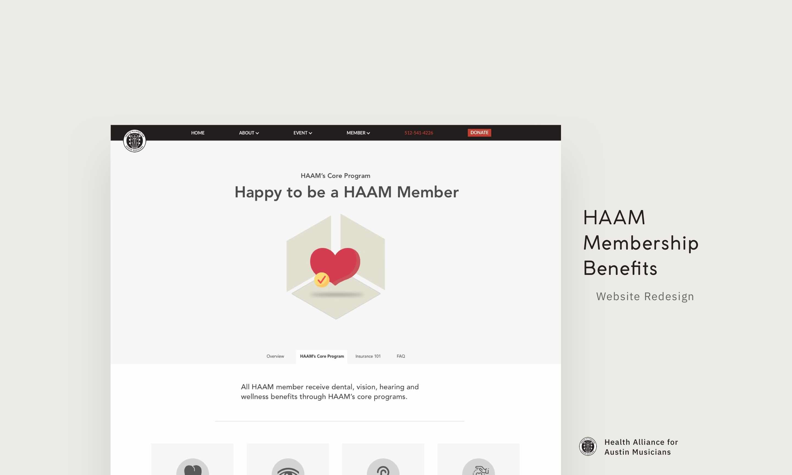
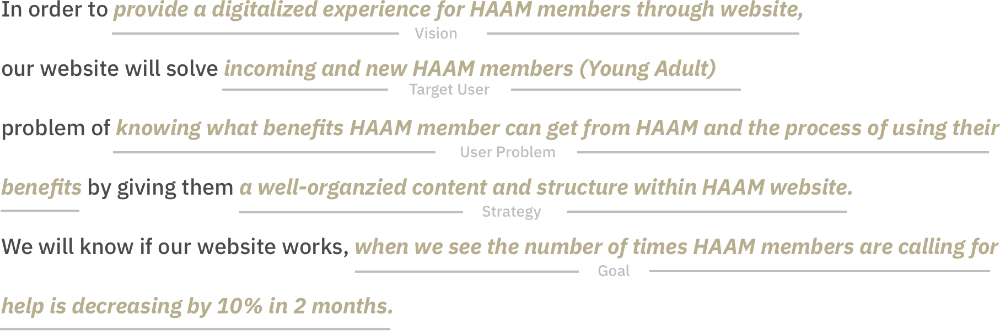
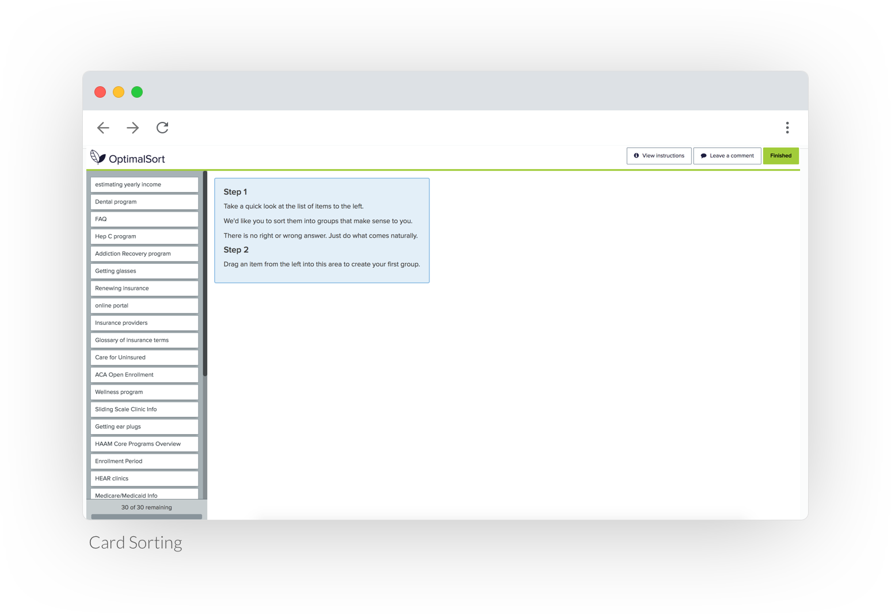

Lead Prototyper, Interaction Designer, Researcher
Jeremy (UX), A-Tsai (UX), Cassidy (Taxonomy), Lindsay (Taxonomy)
InVision, Sketch, OptimalSort, SurveyMonkey, Keynote
11/01/2018 - 12/11/2018
Health Alliance for Austin Musicians (HAAM), Course: Information Architecture and Design
Defined project goals and client needs Planned and executed research plan Conducted heuristic evaluation individually Wrote moderator guide for usability testing Conducted usability testing with 4 participants individually Conducted card sorting with OptimalSort Designed sitemap Designed wireframe individually Designed high-fidelity prototype with Sketch and InVision individually
In last September, HAAM, which stands for Health Alliance for Austin Musicians, launched a new website and trained their members to use the website. However, still a lot of members and new members need consultation of knowing what kind of benefits a HAAM member has after browsing the website. This causes the problem that HAAM don't have enough staff (reach capacity) to solve all of their questions immediately. HAAM has to improve the usablity of its website to better serve their members.
At the home page, we divide member services into four sections, which are Overview, HAAM’s Core Programs, Insurance 101 and FAQ, based on the result we got from card sorting. Below each section, there is a statement to clarify and convey the important message HAAM wants their member knew. As designer and researcher on the project, I designed all the design mockup, wrote research plan and conduct research as a team.
As a UX designer, I planned and defined the scope and strategy of this project. I worked collaboratively with my team on research, synthesizing and ideation, and worked individually on wireframing and prototyping. From this project, I have learned how to create and design meaningful information architecture by conducting content audit and open card sorting, and to analyze design quality through heuristic evaluation.
During the client kickoff we had with HAAM, HAAM brought up some important problems they wanted to solve. Within those difficulties, HAAM core programs and insurance were the top issues. After launched a new website, HAAM members still had a lot of problem related to member benefits. HAAM expects we can identify usbility issues and improve the website to reduce the number of times HAAM members contact HAAM directly. Currently, there are some common challenges HAAM members have. We summarize some pain points that show us the insights for our future research and redesign:
1. Except for HAAM Core Programs (dental, vision, hearing, wellness, Hep C), members can not have subsidization for other insurance plans.
2. New members misunderstand that HAAM does not provide insurance plans.
3. HAAM can only help members for insurance enrollment for plans with the ACA.
4. People encounter problems like missing open enrollment, not paying the premium, not knowing how to locate their member card, not having a way to estimate their income.
After client kickoff, we summarize the target audience, vision, strategy and goals of this project as following.
Based on client pain points, we found HAAM failed to make their benefits on the website easy to understand. Therefore, we addressed to solving benefits-related issues. Our goal is to resonate HAAM's expectation: "we want to empower our members to solve their benefit problems by themselves."
Understand the current experience that incoming and new HAAM members have when browsing member benefits page and validate our hypotheses and questions
How does HAAM show benefits in an approachable way?
Primary User
We think that HAAM members suffer difficulties when knowing and using member benefits:
- What are the difficulties they have when browsing the member benefits page?
- What are the usability issues in HAAM website?
- What is the current process of using member benefits?
- What is the current information architecture of HAAM website?

We conducted competitive analysis of other non-profit and for-pro t organization sites to identify common trends of how sites present member benefits.
Identify common trends of how sites present member benefits.
Takeaway 1
It’s better to keep specific information about member programs separate from more general information about health insurance.Takeaway 2
HAAM should include some of the features competitors offer in order to have a more complete website that users can easily navigate on their own.Takeaway 3
HAAM benefits could be featured more prominently in the center of the page.
We used Heuristic Evaluation to understand the usability issues and information architecture issues on HAAM website. We selected 9 criteria and evaluated each page of HAAM website to see if there was any violation. The violation cases indicate room for improvement and where we should address redesign.
Identify usability problems associated with the design of HAAM member benefits page
0: no problem
1: small problems, don't need to change
2: medium problems, better to change
3: serious problems, must change
After accumulation, the severity rating is displayed below. When we are doing heuristic evaluation, most of the problems are related to consistency and standard. The subtitles are not the same, and the information is hard for users to understand and memorize. We suggest the client tackle issues with learnable first.
Most Severity
Learnable 46/124Most Severity
Learnable 9 issuesTo understand the difficulties HAAM members suffer, we developed a series of seven scenarios that required our participants to complete tasks in order to identify key performance issues. We observed the participants navigate the website while they attempted the tasks, then asked follow-up questions one the participants rated the difficulty of each task.
We conducted a content audit of the member benefits section of the HAAM website. A content audit is a detailed listing of all the content on a site, and is a necessary step of any website redesign. It is a useful tool for keeping track of the content and making sure it’s all present in the redesign, as well as for gaining a better understanding of the content and its inner relationships.
Understand the content and its inner relationships
We ran a card sorting study to help us decide how to reorganize the site. We chose an open card sort where participants organized cards into groups that made sense to them and then labeled those groups.
Explore how participants group information into categories and relate concepts to one another to structure a meaningful information architecture
We created our study online using OptimalSort. Our 30 cards included much of the content from the content audit, as well as additional information we deemed to be necessary based on information from the client kick-off and our prior evaluations of the site. Most of the additional content was about the Affordable Care Act and health insurance in general.
Based on the simialrity matrix, we can know how people group the content. There are three main areas that participants grouped together, which are benefits-related information, membership-related information and insurance-related information.
Principle 1
Tell users about the definition of some hard-understanding termsPrinciple 2
The process of using member benfits has to clearly convey to usersPrinciple 3
Instead of calling HAAM directly, the information of those benefits should show on the website first.
We started ideating from the design implications we generated. We did Crazy 8 individually to get as much crazy (but sensible) ideas as we can at the beginning. Then, each of us share a possible design in front of team.
We ran the same usability test to ensure that we had in fact ameliorated the issues found in the original site. We completed our goal to make clear just what HAAM provides: bene ts for all through their Core Programs, and the ability to assist with members’ understanding of either their own insurance or the ACA - which is what HAAM helps members enroll in. We also achieved our goal in making the process of using bene ts less frustrating by laying out the steps clearly.
Determine whether our mockup meets user's need
4 users
We have made strides in better presenting HAAM benefits by allowing users of the site improved navigation and structure to find the information they need. Future work to continue to develop a comprehensive site include:
● Focusing on the enrollment process, both for HAAM & ACA
● Providing more information regarding health insurance literacy
● Providing more information about local health insurance options
The overall site simply splits into two sections: I am a Member and Become a Member. This labeling is confusing for someone who just wants to know what benefits HAAM offers, and the overall site layout can be adjusted accordingly. We also recommend adding content to the Insurance 101 section in order to help HAAM members feel even more empowered and in control of their health needs. Additionally, more information about available local health plans could be of use to potential members. Finally, this redesign along with future prototypes and research ought to be completed with actual local musicians, both young and old, in order to ensure the website best caters to its actual audience.